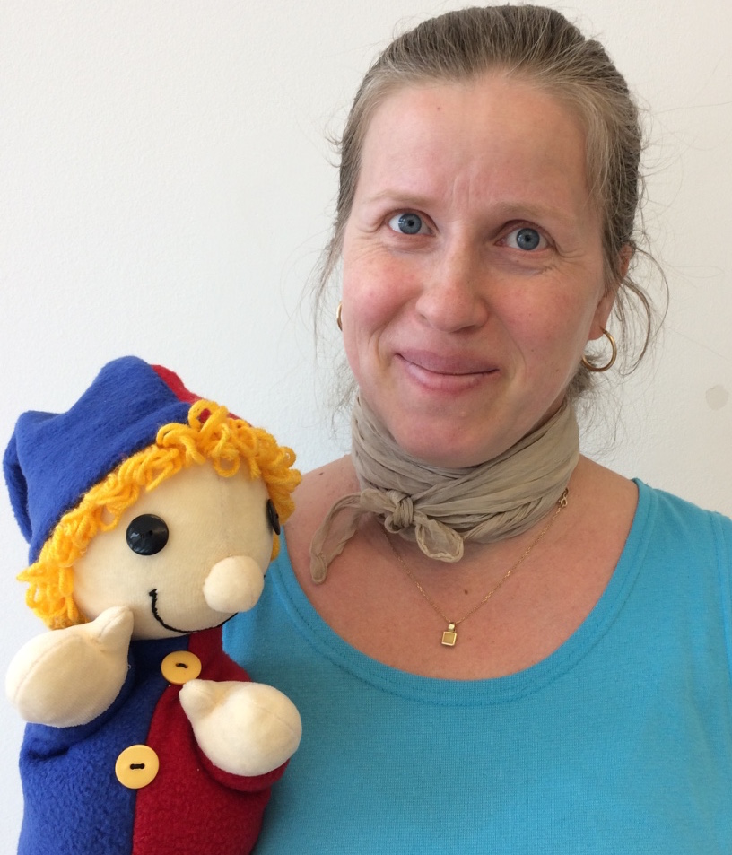

HUNcutkodjunk, kalandra fel!
A Kerekítő Ovimóka csoportos magyar nyelvű foglalkozásaira 3-6 éves gyermekeket várunk. Az órák szülői részvétel nélkül zajlanak (a beszoktatási idő után). A kísérő felnőttek a szomszédos szobában beszélgethetnek, kávézhatnak vagy éppen hallgatózhatnak.
A foglalkozásokat a következő menetrend szerint tartjuk:
9.45-10.00 szabad játék
10.00-10.40 Kerekítő Ovimóka
10.40-11.00 szünet
11.00-11.30 kézműves foglalkozás
Hasznos tudnivalók:
A részvételi szándékot kérjük e-mailben jelezni.
A tagsági díj összege:
Fizetési határidő: 2020. február 16.
Bankgiro számunk: 544-2686
A közlemény rovatba kérjük a gyermek(ek) nevét beírni.
Hilda Eliza Salinas

Az unokatestvéreim példáját követve minden vágyam volt hétévesen, hogy megtanuljak harmonikázni. Mivel a Zeneiskolában nem volt harmonikaoktatás, a választott hangszerem a fuvola lett. Tizennégy évesen felvettem emellé a zongorát, és tudatosan készültem a zenei pályára. 1998-ban végeztem a miskolci Zeneművészeti Főiskola szolfézs-zeneelmélet-karvezetés szakán. A főiskolai évek alatt Tiszaújvárosban, majd Budapesten tanítottam a hatévesektől egészen a felnőtt korosztályig. Svédországba kiköltözve ideiglenesen elhagytam a pályát. Helyette a zene iránti szeretetemet a táncban éltem ki, szabadidőmben rock&rollt, buggot, majd salsát (LA-style, NY-style, bachata) táncoltam.
Férjem indíttatására kezdtem el altfurulyán játszani, majd kislányunk születése végképp visszaterelt a pályámra. 2018 tavaszán elvégeztem mind a Ringató, mind a Kerekítő baba-mama foglalkozásvezetői tanfolyamot. Vágyam volt, hogy Stockholmban rendszeres magyar baba-mama/papa foglalkozások legyenek. 2018 őszén ez meg is valósult, és elindíthattam a Ringató foglalkozásokat a S:ta Eugenia jezsuita templom támogatásával. Ezzel egyidőben elkezdtem citerázni és gitározni, hogy a gyermekek minél több fajta hangszerrel találkozhassanak a foglalkozásokon.
A 2019 tavaszán létrehozott MACSEK egyesülettel szeretnék hozzájárulni ahhoz, hogy rendszeres magyar foglalkozások legyenek elérhetőek a 3-6 éves korosztálynak. Ebben a korban a gyerekek csoportosan, játszva és mozgásokkal tarkítva tanulják, és válik életük részévé a magyar kultúra és hagyomány. A választásom a Kerekítő Ovimóka módszertanára esett, amely ötvözi a drámai és zenei elemeket. Komplex szemléletmódjával közösségi élményt és örömet tud biztosítani a külföldön élő magyar gyermekeknek, ami által közösség és csapat kovácsolódik belőlük.
Szeretettel várlak benneteket a foglalkozásokra!
Stefansgården
Frejgatan 43
11349 Stockholm
(az Odenplan metrómegállótól 5 perc séta)
A foglalkozások heti rendszerességgel folynak vasárnaponként 9:45-től összesen félévenként 12 alkalommal.